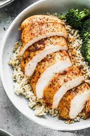

Baked Chicken Breast Recipe

Description
This is a very easy, but elegant, baked chicken breast recipe that looks like you've spent hours in the kitchen when you've barely lifted a finger!
Turn chicken breasts into a golden, garlicky, and juicy meal with this 5-star recipe.
Ingredients
- 2 large bone-in chicken breast halves with skin
- ¼ cup extra-virgin olive oil
- ½ teaspoon garlic, minced
- ½ teaspoon coarse sea salt
- ½ teaspoon cracked black pepper
- ¼ teaspoon dried rosemary
- ¼ teaspoon dried basil
Steps
-
Rub chicken breasts with olive oil and garlic; sprinkle with salt, black pepper,
rosemary, and basil. Arrange chicken in a large baking dish and refrigerate
for at least 45 minutes.
-
Meanwhile, preheat oven to 375 degrees F (190 degrees C).
-
Bake in the preheated oven until chicken meat is no longer pink at the bone and
the juices run clear, 45 to 60 minutes. An instant-read thermometer inserted in
the thickest part of the breast meat should read 165 degrees F (75 degrees C).